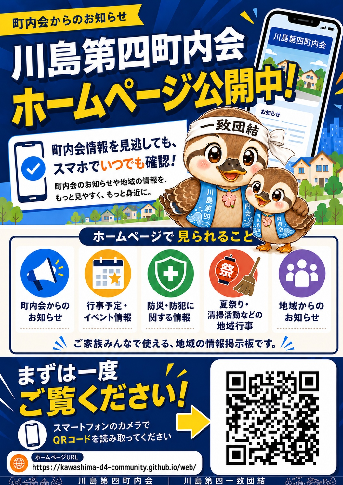

チラシの使い方
町内会ホームページを多くの方に知っていただくため、必要に応じて印刷・共有してご活用ください。
- 回覧板に入れてホームページ公開を案内
- 掲示板や町内会館に掲示
- 夏祭り・清掃活動・防災訓練などの案内と一緒に配布
- LINEやメールで役員・班長さんへ共有
「町内会情報を見逃しても、スマホでいつでも確認できます」という価値を伝える案内チラシです。

回覧板・掲示板・イベント案内などで使える、QRコード付きのホームページ案内チラシです。スマートフォンで読み取ると、川島第四町内会ホームページを開けます。
町内会ホームページを多くの方に知っていただくため、必要に応じて印刷・共有してご活用ください。
